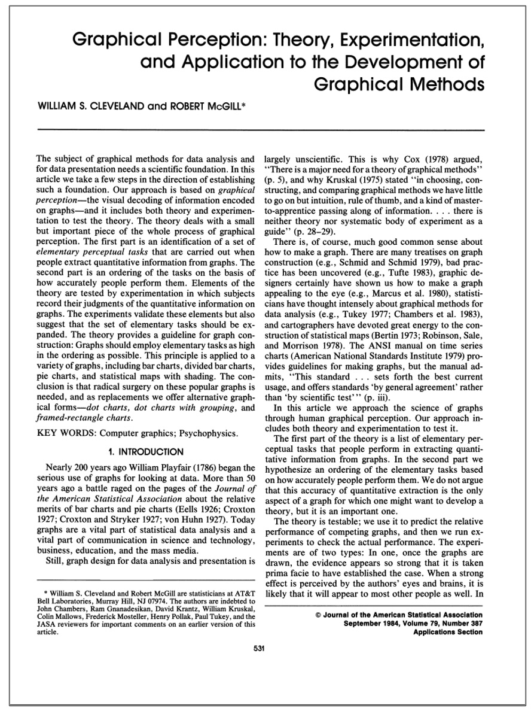
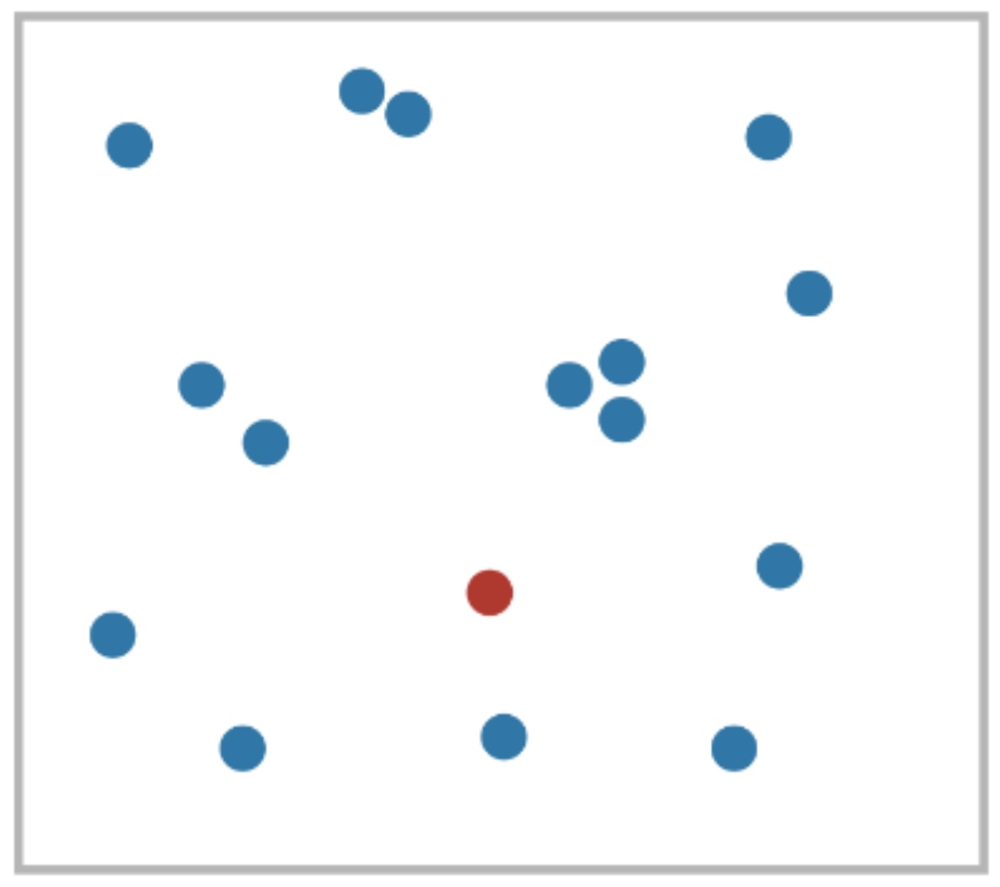
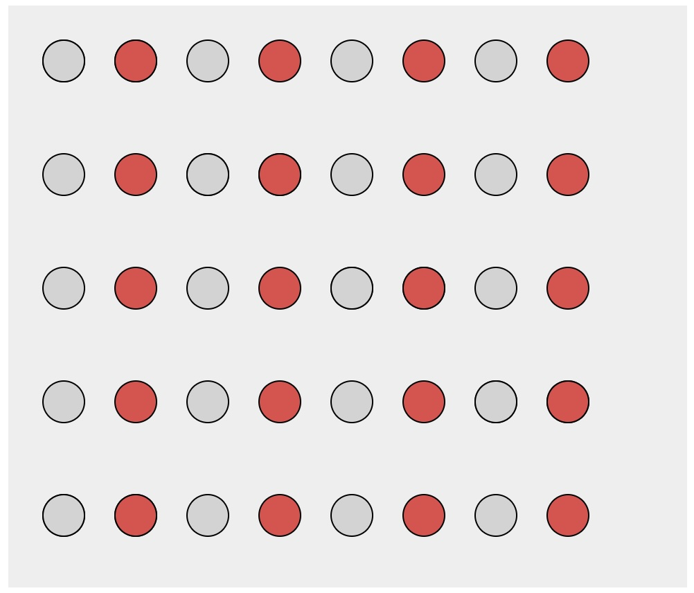
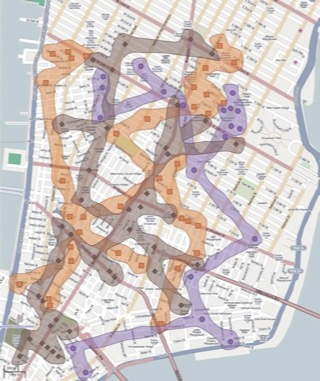
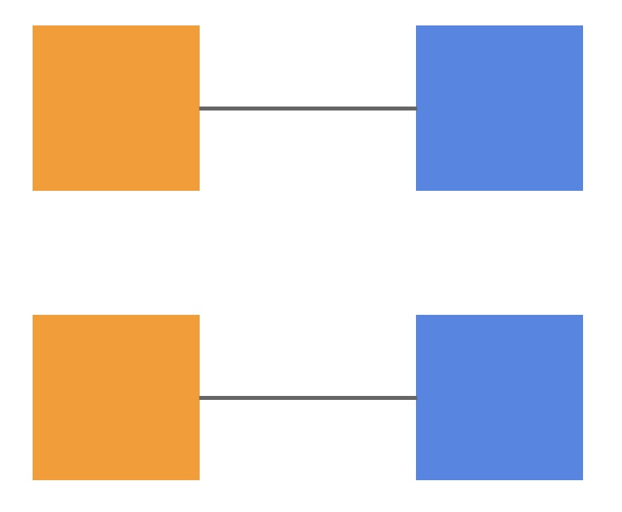

Visual Perception and D3 Foundations
CS-GY 6313 - Fall 2026
2026-09-25
Quick Recap

The Visual Brain

The Act of Perception
Perception runs bottom-up and top-down at the same time

Bottom-up Processing
- Information is filtered into patterns through successive stages:
- Optic nerve to V1 cortex
- Texture and colour aggregate into patterns
- Objects assembled in visual working memory
- The face-vase: one input, two objects, never both at once

Top-Down Processing
- Every bottom-up stage has a matching top-down process
- Ware calls it “attention”
- We get the information we need, when we need it
- Circles are fixations, lines are saccades: most of the scene is never visited

Graphical Perception


Cleveland & McGill Experiment
Task: judge what percentage the smaller marked value is of the larger

Channel Effectiveness Ranking

Relative vs. Absolute Judgments
Humans are better at relative comparisons than absolute judgments

Pre-attentive Processing: Popout


For some features, search time does not depend on the number of distractors (Treisman)
Gestalt: Similarity


Elements with the same visual properties are perceived as grouped
Gestalt: Enclosure


Explicit visual encoding of enclosure depicts grouping
Gestalt: Connection


Objects connected together are perceived as a group
Channel Separability
- Amount of interference between channels
- Colour and shape are separable: attend to one, ignore the other
- Width and height of a rectangle are integral: they fuse into size and shape
- Separable channels can carry two variables; integral ones cannot